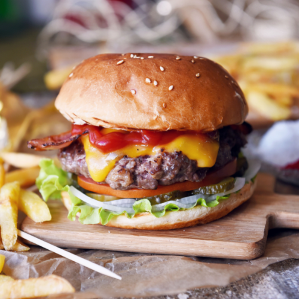

<section class="page-section" id="about">
    <div class="container">
        <div class="text-center">
            <h2 class="section-heading text-uppercase">Platos mas vendidos</h2>
        </div>
        <ul class="timeline">
            <li><a target="_blank">
                    <div class="timeline-image"></div>
                </a>
                <div class="timeline-panel">
                    <div class="timeline-heading">
                        <h4>Pizza Hawaiana</h4>
                    </div>
                    <div class="timeline-body">
                        <p class="text-muted">La pizza hawaiana es una pizza que contiene una base de queso fundido y
                            tomate que se aliñan con jamón y piña. 1 ​ 2 ​ Algunas versiones de esta pizza incluyen
                            tocino, gambas, cerezas, pimiento rojo, champiñón, cebollas o jalapeños. Sea como sea, la
                            piña está siempre presente.</p>
                    </div>
                </div>
            </li>
            <li class="timeline-inverted">
                <a href="../../assets/img/2.jpg" target="_blank">
                    <div class="timeline-image"></div>
                </a>
                <div class="timeline-panel">
                    <div class="timeline-heading">
                        <h4>Hamburguesa monstruosa</h4>
                    </div>
                    <div class="timeline-body">
                        <p class="text-muted">Divide la carne en porciones, forma bolitas y aplasta ligeramente para dar
                            forma de hamburguesa. Calienta un sartén y cocina las hamburguesas con un poco de Carbonell
                            Aceite de Oliva por 2 minutos de cada lado. Distribuye la mostaza sobre las bases del pan y
                            la mayonesa en las tapas. Coloca las hojas de lechuga sobre las bases y agrega el salami</p>
                    </div>
                </div>
            </li>
            <li>
                <a href="../../assets/img/3.jpg" target="_blank">
                    <div class="timeline-image"></div>
                </a>
                <div class="timeline-panel">
                    <div class="timeline-heading">
                        <h4>Lasagna</h4>
                    </div>
                    <div class="timeline-body">
                        <p class="text-muted">La lasaña ( italiano: lasagna) es un tipo de pasta. Se suele servir en
                            láminas superpuestas intercaladas con capas de ingredientes al gusto, más frecuentemente
                            carne ( ragú) en salsa boloñesa y bechamel. Su origen es italiano y el plato preparado
                            usualmente con carne suele llamarse lasaña al horno.</p>
                    </div>
                </div>
            </li>
            <li class="timeline-inverted">
                <a href="../../assets/img/4.jpg" target="_blank">
                    <div class="timeline-image"></div>
                </a>
                <div class="timeline-panel">
                    <div class="timeline-heading">
                        <h4>Pastel de chocolate</h4>
                    </div>
                    <div class="timeline-body">
                        <p class="text-muted">El pastel de chocolate, tarta de chocolate o torta de chocolate, es un
                            postre conocido internacionalmente, que se popularizó a finales del siglo XIX y se sirve
                            frecuentemente en reuniones, como fiestas de cumpleaños y bodas. Los ingredientes pueden
                            variar dependiendo de la receta</p>
                    </div>
                </div>
            </li>
            <li class="timeline-inverted">
                <div style="background-color: #BE9A63" class="timeline-image">
                    <h4>
                        Promozione
                        <br />
                        a
                        <br />
                        lavoro!
                    </h4>
                </div>
            </li>
        </ul>
    </div>
</section>